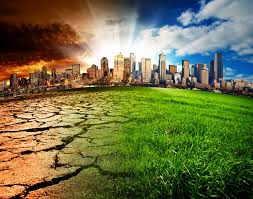

CLIMATE CHANGE
 Climate Change is the defining issue of our time and we are at a defining moment.
From shifting weather patterns that threaten food production, to rising sea levels that increase the risk of
catastrophic flooding, the impacts of climate change are global in scope and unprecedented in scale. Without
drastic action today, adapting to these impacts in the future will be more difficult and costly.
The Human Fingerprint on Greenhouse Gases
Greenhouse gases occur naturally and are essential to the survival of humans and millions of other living things,
by keeping some of the sun’s warmth from reflecting back into space and making Earth livable. But after more than
a century and a half of industrialization, deforestation, and large scale agriculture, quantities of greenhouse gases
in the atmosphere have risen to record levels not seen in three million years. As populations, economies and standards
of living grow, so does the cumulative level of greenhouse gas (GHGs) emissions.
There are some basic well-established scientific links:
- The concentration of GHGs in the earth’s atmosphere is directly linked to the average global temperature on Earth;
- The concentration has been rising steadily, and mean global temperatures along with it, since the time of the Industrial Revolution;
- The most abundant GHG, accounting for about two-thirds of GHGs, carbon dioxide (CO2), is largely the product of burning fossil fuels.
The Intergovernmental Panel on Climate Change (IPCC) was set up by the World Meteorological Organization (WMO) and United Nations Environment to provide an objective source of scientific information. In 2013 the IPCC provided more clarity about the role of human activities in climate change when it released its Fifth Assessment Report. It is categorical in its conclusion: climate change is real and human activities are the main cause.
Fifth Assessment Report
The report provides a comprehensive assessment of sea level rise, and its causes, over the past few decades. It also estimatesimg
 cumulative CO2 emissions since pre-industrial times and provides a CO2 budget for future emissions to limit warming to less
than 2°C. About half of this maximum amount was already emitted by 2011. The report found that:
cumulative CO2 emissions since pre-industrial times and provides a CO2 budget for future emissions to limit warming to less
than 2°C. About half of this maximum amount was already emitted by 2011. The report found that:
- From 1880 to 2012, the average global temperature increased by 0.85°C.
- Oceans have warmed, the amounts of snow and ice have diminished and the sea level has risen. From 1901 to 2010, the global average sea level rose by 19 cm as oceans expanded due to warming and ice melted.
- The sea ice extent in the Arctic has shrunk in every successive decade since 1979, with 1.07 × 106 km² of ice loss per decade.
- Given current concentrations and ongoing emissions of greenhouse gases, it is likely that by the end of this century global mean temperature will continue to rise above the pre-industrial level. The world’s oceans will warm and ice melt will continue.
- Average sea level rise is predicted to be 24–30 cm by 2065 and 40–63 cm by 2100 relative to the reference period of 1986–2005.
 Most aspects of climate change will persist for many centuries, even if emissions are stopped.
Most aspects of climate change will persist for many centuries, even if emissions are stopped.
There is alarming evidence that important tipping points, leading to irreversible changes in major ecosystems and the planetary climate system, may already have been reached or passed. Ecosystems as diverse as the Amazon rainforest and the Arctic tundra, may be approaching thresholds of dramatic change through warming and drying. Mountain glaciers are in alarming retreat and the downstream effects of reduced water supply in the driest months will have repercussions that transcend generations.